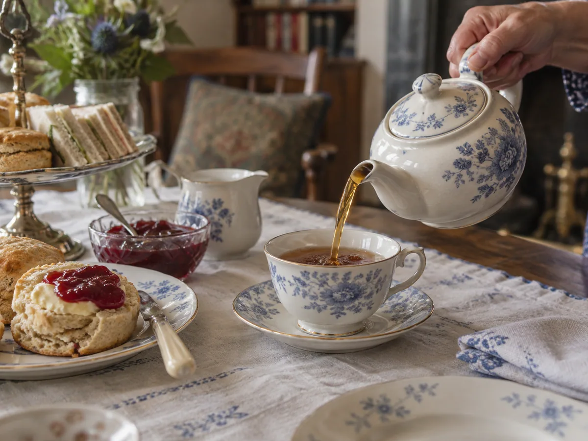

Afternoon tea did not arrive fully formed on a silver stand. It was not invented with three neat tiers, a strict sandwich order, and a rulebook about pinkie fingers. It began as a practical pause inside an upper-class day that placed dinner increasingly late, then grew through invitations, hotel dining rooms, department stores, tourism, and domestic improvisation. The ritual has always been more flexible than its polished image suggests.
Tea gains courtly visibility
Tea drinking becomes fashionable among England's elite, associated especially with Catherine of Braganza and the Restoration court.
Dinner moves later
Wealthy households increasingly dine in the evening, opening a long gap after a light midday meal.
Anna Russell enters the story
The Duchess of Bedford is commonly credited with requesting tea and a light refreshment in the late afternoon, then inviting friends.
The custom travels
Hotels, tea rooms, shops, and middle-class homes reshape afternoon tea for public and domestic life.
Tea was already British before “afternoon tea” had a name
Tea reached Britain in the seventeenth century as an imported luxury. Courtly fashion helped it acquire status, but trade, taxation, smuggling, empire, and changing retail networks eventually pushed tea beyond aristocratic rooms. By the eighteenth century, tea was embedded in social visits and household rhythms across a wider range of classes, though the quality, vessels, and foods served with it varied enormously.
That longer history matters because the Duchess of Bedford did not introduce tea drinking to Britain. The familiar origin story concerns a specific social occasion: a late-afternoon refreshment bridging the widening space between lunch and a fashionable late dinner.
The Duchess, the “sinking feeling,” and a useful story
Anna Maria Russell, seventh Duchess of Bedford and a lady-in-waiting to Queen Victoria, is traditionally linked to afternoon tea in the 1840s. Accounts describe her feeling hungry in the late afternoon and asking for tea, bread and butter, or small cakes in her private rooms. Friends joined her; a personal solution became a sociable appointment.
The story survives because it makes cultural change easy to picture: one hungry woman, one tray, one new habit. Historians treat tidy invention stories cautiously. Customs usually develop through many households, and tea with light food was not unimaginable before the duchess. Her importance lies in representing the moment when a late-afternoon tea gathering became fashionable and nameable among the elite.
The lasting innovation was not tea plus food. It was turning the pause into an invitation.
Why meal timing created the opening
Meals are clocks as much as menus. In prosperous nineteenth-century households, dinner shifted later as artificial lighting, work patterns, and social schedules changed. A light luncheon could leave six or seven hours before the evening meal. Tea and a small plate of food filled the physical gap, while the guest list filled a social one.
Afternoon tea offered a controlled setting for conversation, display, and hospitality. The host could present fine china, linens, imported tea, and refined baking without mounting a full dinner. The event took place in drawing rooms or gardens and allowed a different rhythm from the formal dining table.
What was on the early table?
There was no eternal menu. Bread and butter, small cakes, biscuits, and simple sandwiches all suited the occasion because they could be eaten neatly and did not replace dinner. Scones became strongly associated with afternoon tea, but the exact combination of jam, cream, cake, and sandwiches that visitors now recognize was shaped over time by regional habits and commercial hospitality.
The three-tier stand is useful in hotels because it saves table space and creates visual abundance. It is not the ritual's founding object. Nor is the often-repeated serving order—sandwiches, then scones, then sweets—a universal historical command. It is a sensible modern progression from savory to rich to sweet, not a test of belonging.

Afternoon tea is not high tea
The two phrases are regularly swapped, especially outside Britain. Historically, “high tea” referred to a more substantial early-evening meal eaten at a high dining or kitchen table, often by working families. It might include bread, cheese, eggs, cold meat, pies, or a cooked dish alongside tea. “High” described the table and meal setting, not a higher level of luxury.
Afternoon tea—sometimes called low tea because it could be served at low drawing-room tables—was lighter and more closely tied to leisure. Modern hotels may use “high tea” as an elegant marketing phrase, so contemporary menus do not always preserve the old distinction. Context tells you whether the term means a hearty meal or a formal tower of sweets.
Afternoon tea
Late afternoon; tea with sandwiches, scones, cakes, or biscuits; historically associated with sociability and leisure.
High tea
Early evening; a more filling family meal at a dining table; often savory and practical rather than ceremonial.
How the ritual moved beyond drawing rooms
As tea became more affordable and urban public life expanded, commercial spaces adapted the custom. Hotels turned afternoon tea into an occasion with service and spectacle. Department-store refreshment rooms offered women respectable places to meet in public while shopping. Tea rooms created employment and a social environment distinct from pubs and formal restaurants.
Domestic versions remained simpler. A pot of tea and a slice of cake after school, a plate of biscuits for visitors, or a weekend cream tea all belong to the broader family, even without silver tongs. The ritual's endurance comes from its ability to shrink and expand: ordinary on Tuesday, theatrical for a birthday.
Empire sits inside the cup
No account of British tea culture is complete if it treats tea as a purely domestic invention. Leaves, sugar, porcelain, and spices arrived through global systems of trade and empire, often shaped by coercion, plantation labor, and colonial policy. The comforting image of the tea table can obscure the difficult histories that made its ingredients abundant and affordable.
That does not make the ritual meaningless; it makes it layered. A modern tea can be both a cherished family practice and an occasion to recognize where ingredients come from, who produced them, and how national traditions are assembled through movement and power.
The etiquette myths people worry about
- Pinkie raised? No. Hold the cup comfortably without performing a gesture.
- Milk first or tea first? Both have historical defenders. Today the tea, cup, and preference matter more than declaring a universal rule.
- Must scones be split with a knife? They are commonly broken open by hand, but no guest should be policed over crumbs.
- Cream or jam first? Cornwall and Devon carry proud, differing customs. Follow the house, or follow your pleasure.
- Must every tea be loose-leaf? Loose leaves allow control and theater; a good tea bag can still produce a hospitable cup.
A modern tea that keeps the spirit
For four people, make two sandwich fillings, one batch of scones, and one cake or purchased sweet. That is enough variety without turning hospitality into catering. Cucumber with salted butter offers freshness; egg and cress or smoked fish adds substance. Bake scones shortly before guests arrive and wrap them in a clean towel. Choose a simple loaf cake that can be made the day before.
Warm the pot with hot water, empty it, then brew the tea according to the leaf rather than a single British rule. Black teas such as Assam or a balanced breakfast blend stand up to milk and rich food. Darjeeling or lighter black tea suits a more delicate menu. Offer hot water so guests can adjust later cups.
Do not crowd the table with every piece of china you own. Cups, small plates, teaspoons, a milk jug, a sugar bowl, napkins, and serving plates are enough. The central act is making time for people to sit. A flawless tiered stand cannot rescue tea that feels rushed.
Why the ritual persists
Afternoon tea creates a boundary in the day. It is neither lunch nor dinner, neither necessary fuel nor entirely dessert. That in-between status gives it emotional room. People use it for celebration, tourism, remembrance, and a modest domestic reset. Its formality can be heightened, but its basic logic is generous: stop, pour, pass something small, continue talking.
Perhaps that is why the duchess story remains appealing even when history is more complicated. Hunger prompted a pause; company made the pause worth repeating.
Questions around the tea table
What time is afternoon tea served?
Traditionally it falls in the late afternoon, often between 3 and 5 p.m. Modern hotels set their own reservation times, and a home tea can follow whatever schedule creates an unhurried gap.
Is cream tea the same thing?
A cream tea is narrower: tea served with scones, jam, and clotted cream. Afternoon tea usually includes additional savory and sweet foods.
Did Queen Victoria invent afternoon tea?
No. The custom is most often associated with Anna Russell, Duchess of Bedford, though Queen Victoria's court helped fashionable practices gain visibility.
The traditional Duchess of Bedford account and period context were checked against material from Historic Royal Palaces. The ritual developed over time; no single anecdote explains every form it later took.